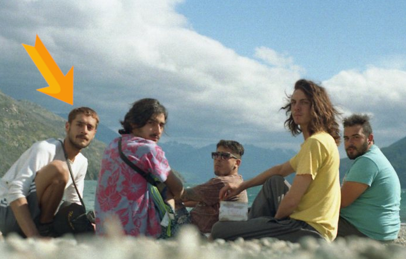
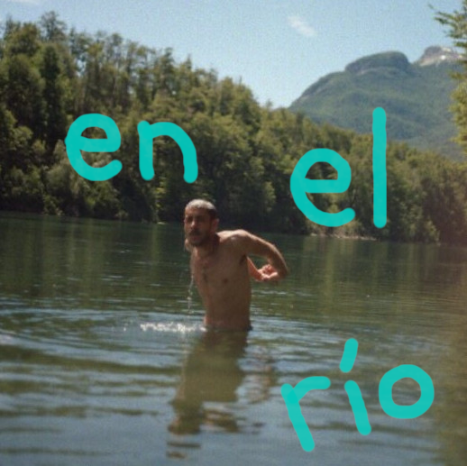
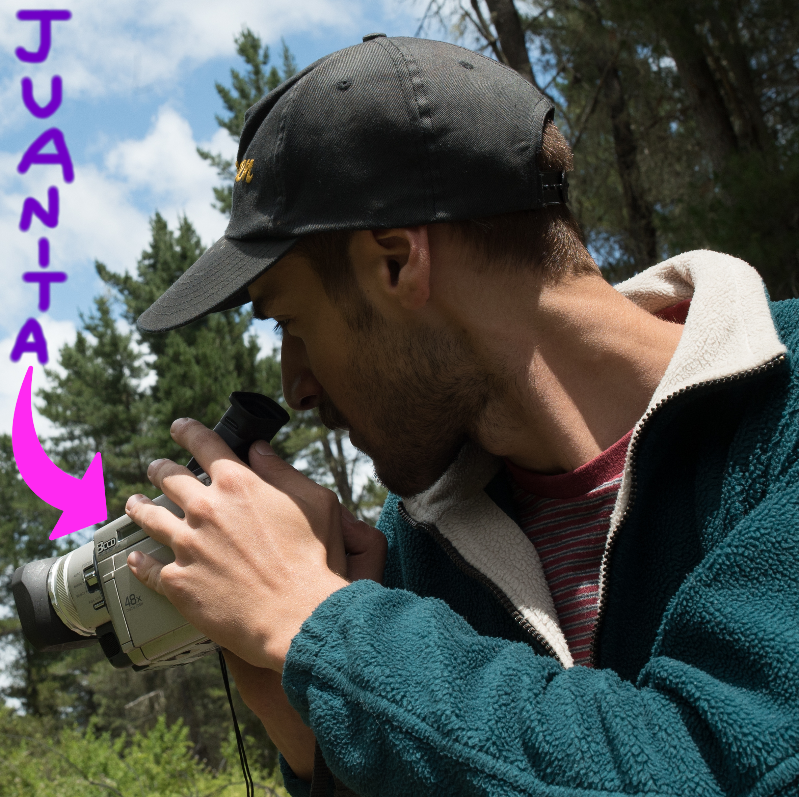
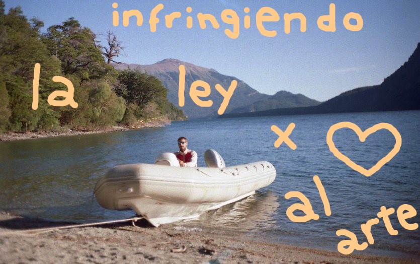
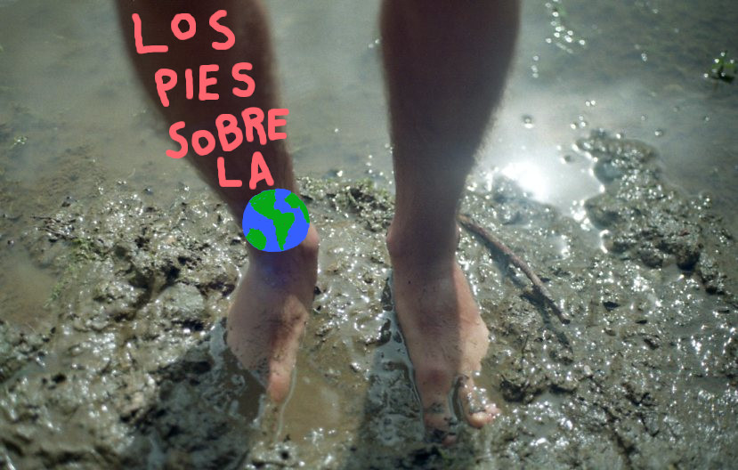
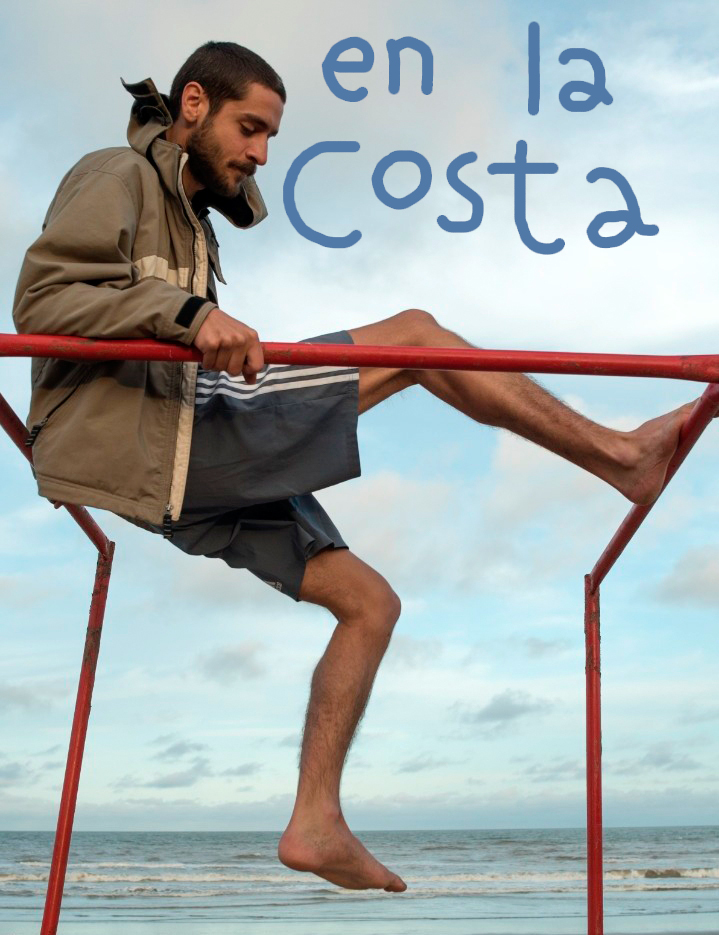
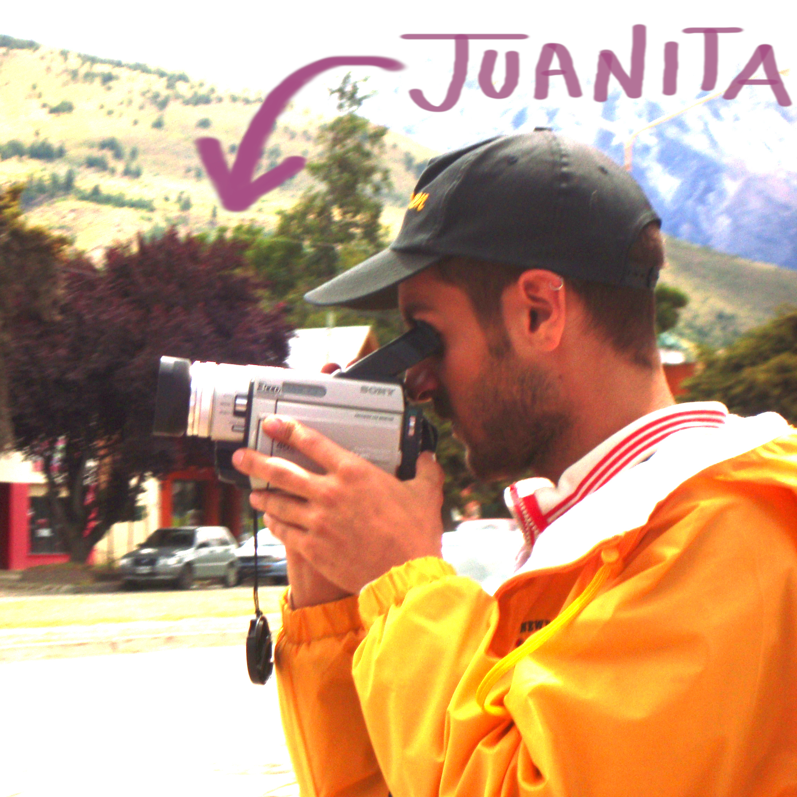

- Nació en el Gran Buenos Aires en 1995. Hoy publica sus obras on-line.
- En el 2015 empezó la carrera de Filosofía en la UBA.
- Ha usado una Minolta GX-7, una Holga y una Sony Cyber-shot. La mayoría de sus videos fueron hechos con una Sony TRV-900 a quien decidió llamar "Juanita".



